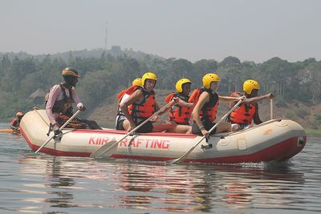
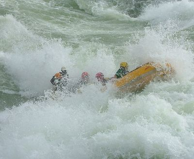
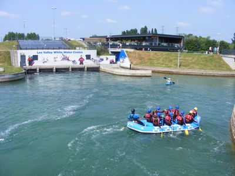
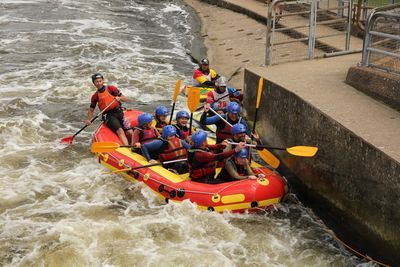
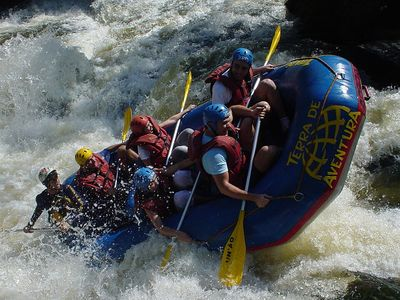

Los Dientes del Diablo
Our most technical run, weaving between exposed boulders and sharp drops. Recommended for experienced paddlers looking for a real challenge.
From relaxed half-day floats to adrenaline-packed full-day expeditions, there is a Rio Verde Rafting trip for every group and skill level.
Contact Us to Book a Trip
Our most technical run, weaving between exposed boulders and sharp drops. Recommended for experienced paddlers looking for a real challenge.

A full day on the river with a mix of steady flat water and exciting rapids, plus a riverside lunch stop along the way.

A shorter, beginner-friendly trip that's perfect for families and first-time rafters who want a taste of the rapids.

A shorter evening float with calmer water, ending with golden light on the canyon walls. A favorite for photographers.

Our longest trip, covering the most river miles and the widest variety of rapids, with a guided riverside lunch included.
| Trip | Duration | Difficulty | Price |
|---|---|---|---|
| Los Dientes del Diablo | Half Day | Advanced | $89 |
| Big Mallard | Full Day | Intermediate | $149 |
| Half Day Adventure | Half Day | Beginner | $69 |
| Sunset Run | 2 Hours | Beginner | $49 |
| Full Day Expedition | Full Day | Advanced | $179 |